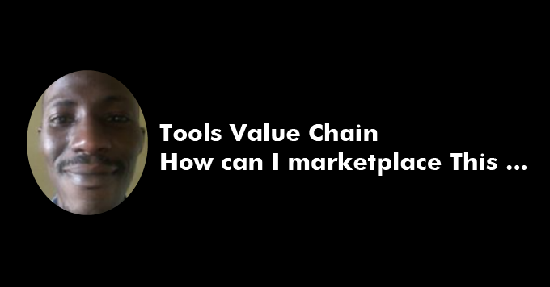

Tools Value Chain — How to marketplace This?


Your saas product is hired to do a specific job. There is for sure a chain of jobs done before the job to be done by your saas solutions of the ones of your competitors. People and Companies Hire tools for doing a job may be more efficiently or effortlessly. If you have created a saas product it is better for you to know what job it tends to do and what are these other jobs to be done before this specific job into which your saas solution in specialized. If someone hires a website it is more obvious that at some point in time he or she gonna need analytics tools like google analytics or yours. If he starts measuring her website performance he will need to hire a tool or an information source for understanding better SEO. If you are an SEO expert selling SEO information you should first know who has a website — everybody- Who uses an analytics tool for website … How will you sell SEO Advice to someone who just has a website and know nothing about website metrics? He can buy your SEO advice or software but he will see better the value of your service if he know something about website metrics…. If it is part of your funnel to educate your audience before selling them something- This is the best path. The segment of people who has a website but know nothing about website analytics will be your audience to educate. Don't try to sell them Seo solution but help them know how website analytics works, help them install, and use google analytics and solution like that. Once they start to see how their website is performing, you now can start highlighting the value of your services….. for the website owners who have already an analytics toolbox they are the ones who are part of your hot segment — Sell them your SEO service value right NOW. They KNOW what SEO stands for.
I am building a simple solution that helps Saas sellers grab intelligence about saas products purchased by people and companies. With this information on hand, they will be more able to show the value of their Saas product when it is used in a chain of saas tools like the ones the leads have already subscribe to.